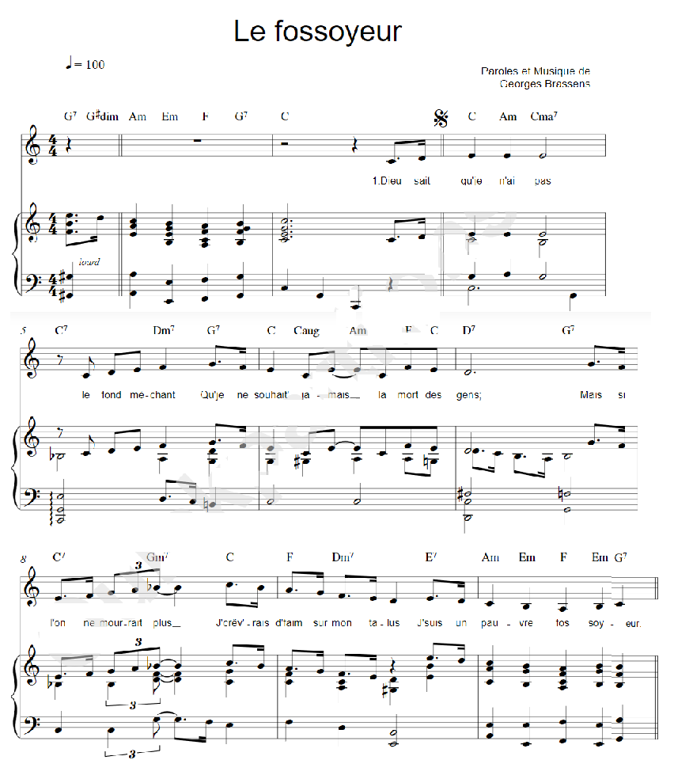

Le fossoyeur
The grave-digger
Georges Brassens (1953)
|
|
NOTES
|
[1] Je n'ai pas le fond méchant : jeu de mots sur « fond ». . [2] Sur le dos : autre jeu de mots : aux dépens et « au-dessus ».. . [3] Avoir une figure d'enterrement (l'air triste).. . [4] La "vraie" expression est « prendre la vie comme elle vient ».. . [5] Dans son premier album, Brassens, avec « Le fossoyeur » inaugure une galerie de portraits de personnages solitaires (Pauvre Martin, Bonhomme) et vieux (Le vieux Léon, L'ancêtre) qui ont rendez-vous avec la Mort (Oncle Archibald, Grand-père...). Plus tard il reprendra ce thème directement à son compte (Supplique pour être enterré à la plage de Sète, Le bulletin de santé, etc.). Le thème de la Mort court dans toute son uvre. N'était-ce pas la mort prochaine de la chanson en langue française qu'il pressentait et dont il portait ainsi le deuil? |
[1] I am a good person at bottom: pun on fond, "bottom".. . [2] On the back: another pun: at someone's expense and "above someone buried in the earth".. . [3] To be gloomy (to put on a funeral face).. . [4] The "true" expression is "taking life as it comes" [5] In his first album, Brassens, with "The gravedigger" inaugurated a gallery of portraits of solitary characters (Poor Martin, Bonhomme) and old people (Old Léon, The ancestor) who have an appointment with Death (Uncle Archibald, Grandfather...). Later on he will address his own person with this theme (Supplication to be buried at the beach of Sète, The Health report, etc.). The theme of Death runs throughout his work. Wasn't it the approaching death of French-language song that he foresaw and for which he thus mourned? |
|
 Brassens chante "Le fossoyeur" |